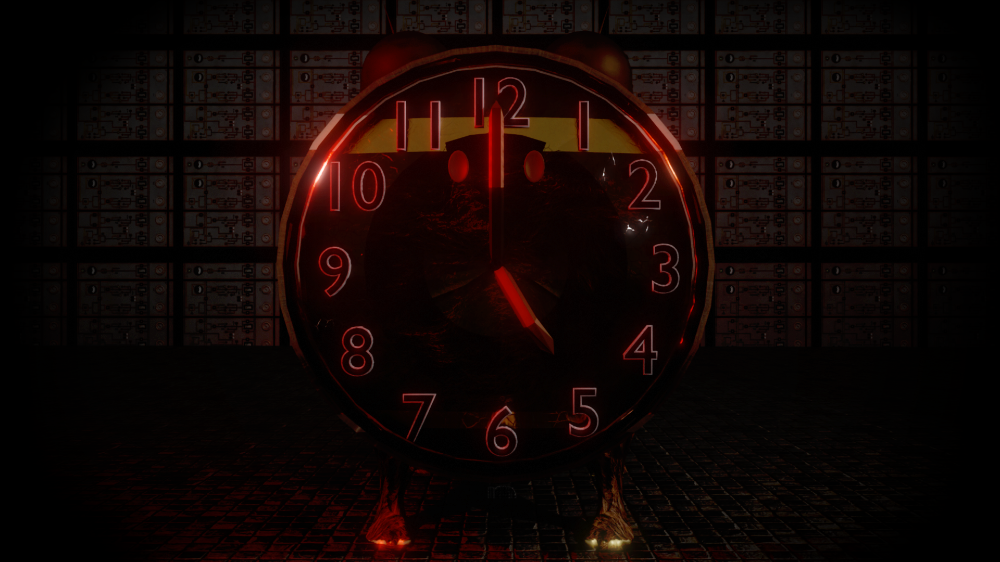
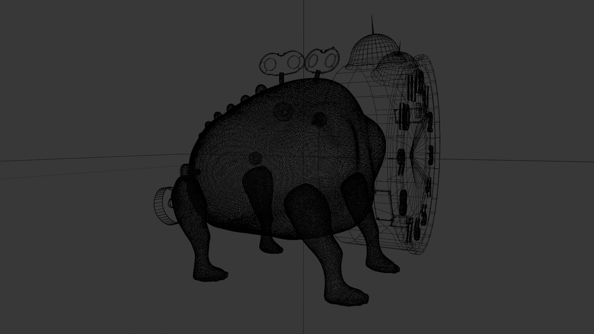
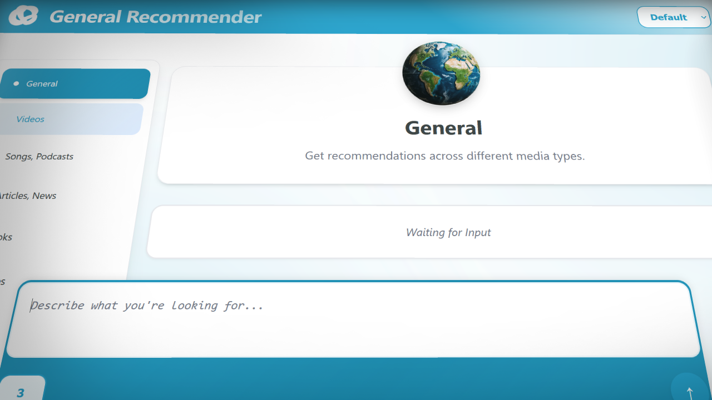

Monster des Zeitreisens
3D-Charakter
Ich zeige Ausschnitte aus solchen großen Projekte normalerweise nie so früh, doch hier der Charakter eines Monsters mit funktionsfähigen Körperteilen, die animierbar sind. Sein Körper besteht aus eine Mischung aus einem Tiger und mechanischen Bauteilen.


General Recommender
KI-gesteuerte Empfehlungswebseite
Was im Informatikunterricht ein gewöhnliches Programmierprojekt werden sollte, entwickelte sich rasant zu einer visuell beeindruckenden Webseite, die den Benutzer am besten kennt.
Eine Webanwendung, die nicht nur durch eine kurzen Beschreibung die passendste Empfehlung findet, sondern den Weg dahin auch noch interaktiv macht.

Monitarisierung
Sowie in persönlichen Projekten als auch in beruflichen suche ich stets die Möglichkeit, Werke zu monitarisieren und dadurch Leidenschaft mit Profit zu kombinieren. Hier ist das Symbol einer orientalischen Währung, die ich bei einem Projekt dazu entworfen habe.